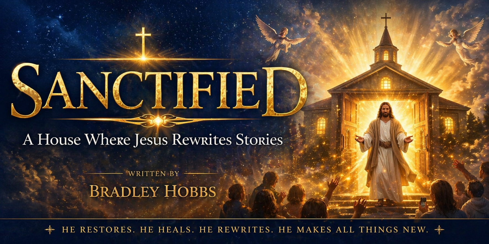

Home
About
Chapters
Contact

Start Reading
Chapter 1 — Sanctified Begins Where Jesus Stands
Chapter 2 — Sanctified Is Christ Formed Within
Chapter 3 — Sanctified Means Safe Enough to Heal
Chapter 4 — Sanctified Beyond the Power of Labels
Chapter 5 — Sanctified Through Transformation and the Spirit
Chapter 6 — Sanctified Through History and Understanding
Chapter 7 — Sanctified Love Restores the Heart
Chapter 8 — Sanctified Healing Across Generations
Chapter 9 — Sanctified to Step Into Calling
Chapter 10 — Sanctified: The House Where Stories Are Completed